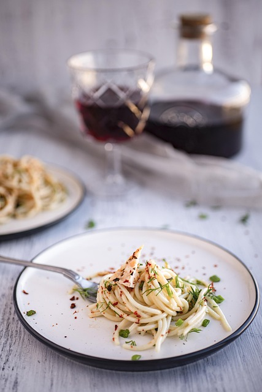

Back to Homepage
Marry Me Chicken

Description
Marry Me Chicken is a creamy, garlicky skillet dish so irresistibly delicious, it’s rumored to inspire spontaneous marriage proposals. Legend has it, one bite of this sun-drenched, parmesan-kissed chicken and you'll have someone down on one knee before dessert.
Ingredients
- 1 pound of skinless and boneless chiken breast halves
- 2 tbs butter
- 4 gloves of garlic
- 1 ts dried oregano
- 1 ts ground thyme
- 1/2 chicken broth
- 1 tbs flour
- 1/2 cup freshly shaved Parmesan cheese
- 1/2 cup whipping cream
- 1/2 cup chopped sun-dried tomatoes
- 1 pinch red pepper flakes
- salt and black pepper to taste
Steps
- Gather the goods: Chicken breasts, garlic, cream, sun-dried tomatoes, parmesan, herbs, and love (obviously).
- Prep like a pro: Pat the chicken dry, season with salt, pepper, and a little paprika for smoky charm.
- Sear the stars: Heat olive oil in a skillet and brown the chicken on both sides until golden — don’t fully cook yet.
- Set aside royalty: Remove chicken and keep it warm while the magic sauce gets going.
- Sauté the soul: Toss in garlic and sun-dried tomatoes, let them dance in the pan until aromatic.
- Pour the velvet: Add heavy cream and grated parmesan, stirring until smooth, dreamy, and slightly thickened.
- Herb it up: Sprinkle in thyme, chili flakes, and a whisper of basil for romance.
- Bring back the chicken: Return it to the sauce, simmer gently until cooked through and tender.
- Seal the deal: Spoon the sauce over the chicken, garnish with more herbs or a touch of lemon zest.
- Serve & swoon: Plate with pasta, potatoes, or crusty bread — and prepare for the proposal.